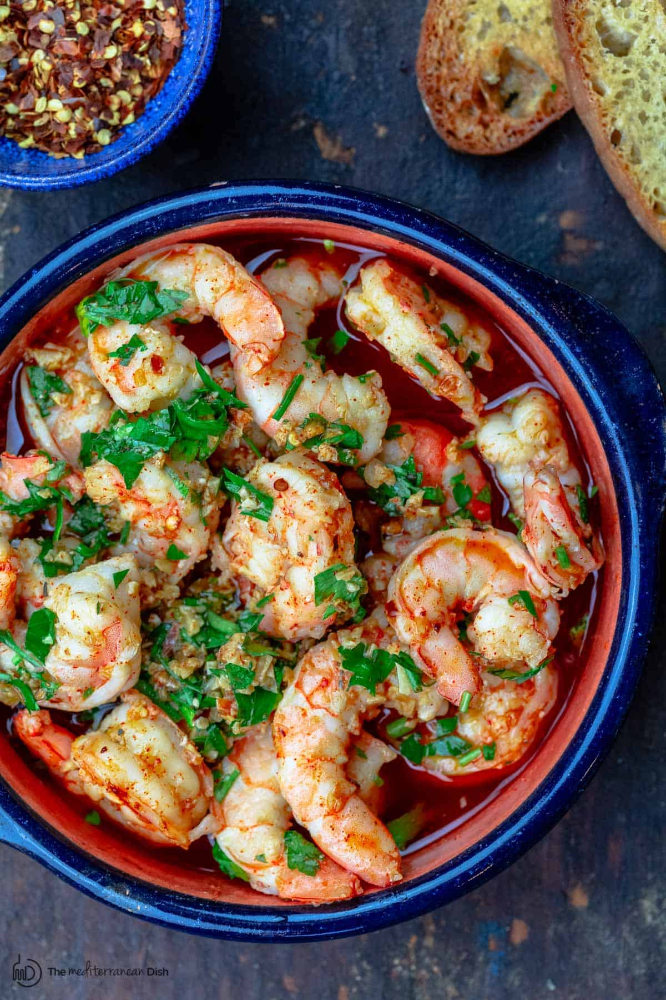

Simple Spanish Style Shrimp

Description
A simple spanish style shrimp in olive oil brimming with garlic and paprika flavour.
Ingredients for 4 Servings
- 2 kg Frozen, peeled and deveined large shrimp
- 1 tsp Hot smoked paprika
- 4 cloves Garlic
- 1/4 cup Extra-virgin olive oil
- 2 Tbsp Sherry or white wine
- 1 Tbsp Chopped Parsley
- salt
Preparation
- Place shrimp in a bowl and coat with paprika and salt evenly
- Slice garlic into thin slices
Cooking
- Heat olive oil on medium heat, add garlic and cook for about 2 minutes until golden
- Pour in sherry or white wine
and stir continuously until sauce is boiling and the shrimp is cooked through and add 1 minute
- Remove from heat, stir in parsley and then serve